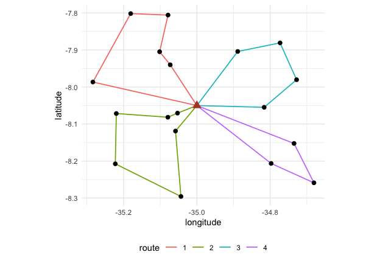
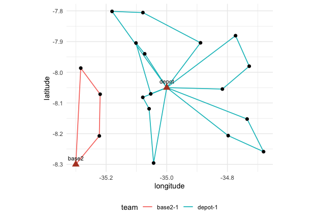

The same sample can be worked by one team on a long tour or by several teams on short routes. The total travel differs, the number of days differs and the cost differs. This vignette compares those organisations on one sample.
library(fieldopt)
library(dplyr, warn.conflicts = FALSE)
set.seed(7)
frame <- tibble(
unit = c("depot", paste0("s", 1:60)),
lat = c(-8.05, -8.05 + runif(60, -0.25, 0.25)),
lon = c(-35.00, -35.00 + runif(60, -0.35, 0.35))
)
m <- travel_matrix(frame)
model <- field_cost_model(
per_travel = 1.8, per_unit = 40, per_interview = 12,
interviews_per_unit = 6, currency = "BRL"
)
s <- frame |>
filter(unit != "depot") |>
select_units(n = 18, seed = 3)One tour
one <- route_fieldwork(m, units = s, depot = "depot", cost_model = model)
one
#>
#> ── Field routes ────────────────────────────────────────────────────────────────
#> 1 route from "depot" through 18 units: total travel 260.6 km (proven optimal).
#> Route 1 (260.6): s10 > s30 > s44 > s52 > s38 > s25 > s23 > s27 > s40 > s34 >
#> s18 > s58 > s47 > s22 > s28 > s21 > s39 > s6
#> Cost (BRL): travel 469.1 + routes 0 + units 720 + interviews 1296 = 2485.Routes limited by length
A team that must return to the depot every day has a maximum route length, here 100 km. The solver splits the tour optimally under that limit (Prins 2004) and improves each route locally.
days <- route_fieldwork(
m,
units = s, depot = "depot", max_length = 100,
cost_model = model
)
days
#>
#> ── Field routes ────────────────────────────────────────────────────────────────
#> 4 routes from "depot" through 18 units: total travel 354.8 km (lower bound
#> 189.8, gap 87%).
#> Route 1 (97.7): s27 > s23 > s25 > s38 > s52
#> Route 2 (91.75): s30 > s18 > s34 > s40 > s44 > s10
#> Route 3 (78.45): s6 > s39 > s21 > s28
#> Route 4 (86.94): s58 > s47 > s22
#> Cost (BRL): travel 638.7 + routes 0 + units 720 + interviews 1296 = 2655.
autoplot(days)
Routes limited by stops
A team that can interview at most four units a day has a stop limit instead.
stops <- route_fieldwork(
m,
units = s, depot = "depot", max_stops = 4,
cost_model = model
)
stops
#>
#> ── Field routes ────────────────────────────────────────────────────────────────
#> 5 routes from "depot" through 18 units: total travel 372 km (lower bound 189.8,
#> gap 96%).
#> Route 1 (108.7): s18 > s34 > s40 > s27
#> Route 2 (73.8): s52 > s38 > s23 > s25
#> Route 3 (78.45): s28 > s21 > s39 > s6
#> Route 4 (86.94): s58 > s47 > s22
#> Route 5 (24.12): s30 > s44 > s10
#> Cost (BRL): travel 669.5 + routes 0 + units 720 + interviews 1296 = 2686.Comparing
bind_rows(
`one tour` = glance(one),
`100 km per route` = glance(days),
`4 stops per route` = glance(stops),
.id = "organisation"
) |>
select(organisation, n_routes, travel_km = total, cost) |>
mutate(across(c(travel_km, cost), round))
#> # A tibble: 3 × 4
#> organisation n_routes travel_km cost
#> <chr> <int> <dbl> <dbl>
#> 1 one tour 1 261 2485
#> 2 100 km per route 4 355 2655
#> 3 4 stops per route 5 372 2686The travel grows with the number of routes because every route starts and ends at the depot; the question for the planner is whether the extra kilometres are cheaper than the extra days or teams, which is a cost model question, not a routing one.
Road distances
Distances from coordinates understate travel on real roads. Two ways to do better, both feeding the same routing and cost functions:
- a detour factor, the ratio of road to straight-line distance, which on rural networks usually lies between 1.2 and 1.4: a planning estimate when no network is at hand;
- a road-network matrix from an OSRM server, with
method = "osrm": durations in minutes or distances in kilometres, requested in blocks so that the server’s table limit is respected. The public demo server is for small tests; run your own server (with OpenStreetMap data of the region) for a frame. A matrix computed by any other engine can be passed throughmatrixinstead.
m_detour <- travel_matrix(frame, detour = 1.3)
m_detour
#> Travel matrix: 61 units, haversine x 1.3 (km); mean off-diagonal 42.48.
m_road <- travel_matrix(frame, method = "osrm", measure = "duration")
route_fieldwork(m_road, units = s, depot = "depot", max_length = 480) # 8 hours per routeThe snap attribute of an OSRM matrix gives the distance
from each unit to the nearest point of the network the server could use;
units snapped from far away are the ones whose access the field team
should check.
Time at the unit, cost per team-day and the calendar
When the matrix is in minutes, a day has a length and so does the
work at each unit: service_time is added to the travel of a
route when the limit is checked (a segment with nine points and a few
interviews can take two hours), and the cost model’s
per_route charges each route as a team-day (allowances,
vehicle, lodging). Routes are then days of work.
daily <- field_cost_model(
per_travel = 0.5, per_route = 400, per_unit = 20, per_interview = 15,
interviews_per_unit = 3, currency = "BRL"
)
day <- frame |>
travel_matrix(detour = 1.3, speed = 60) |> # kilometres at 60 km/h: minutes
route_fieldwork(
units = s, depot = "depot", max_length = 480, service_time = 120,
iterations = 50, cost_model = daily
)
day
#>
#> ── Field routes ────────────────────────────────────────────────────────────────
#> 6 routes from "depot" through 18 units: total travel 571.4 min (lower bound
#> 246.7, gap 132%).
#> Route 1 (31.35, duration 391.4): s10 > s44 > s30
#> Route 2 (113, duration 473): s58 > s47 > s22
#> Route 3 (99.32, duration 459.3): s39 > s21 > s28
#> Route 4 (116, duration 476): s6 > s25 > s23
#> Route 5 (115.9, duration 475.9): s40 > s34 > s18
#> Route 6 (95.81, duration 455.8): s52 > s38 > s27
#> Cost (BRL): travel 285.7 + routes 2400 + units 360 + interviews 810 = 3856.
glance(day)
#> # A tibble: 1 × 9
#> n_units n_routes total lower_bound gap optimal longest_route travel_unit
#> <int> <int> <dbl> <dbl> <dbl> <lgl> <dbl> <chr>
#> 1 18 6 571.38 246.68 1.3163 FALSE 115.98 min
#> # ℹ 1 more variable: cost <dbl>With several teams based in several towns,
schedule_fieldwork() solves one multi-depot problem: which
base serves each unit, how the routes are drawn, and how many routes to
open when the cost model charges a team-day. Each base may send at most
teams * days routes. The routes are then distributed over
the teams and the days available, longest first, and the calendar says
who goes where on which day and whether the work fits.
bases <- tibble(unit = c("depot", "base2"), lat = c(-8.05, -8.30), lon = c(-35.00, -35.30))
sch <- s |>
travel_matrix(bases = bases, detour = 1.3, speed = 60) |>
schedule_fieldwork(
units = s, teams = c(depot = 1, base2 = 1), days = 6,
max_length = 480, service_time = 120, iterations = 50, cost_model = daily
)
sch
#>
#> ── Field schedule ──────────────────────────────────────────────────────────────
#> 18 units, 2 bases, 2 teams, 6 days available: the work fits.
#> "depot": 15 units, 1 team, 5 routes, 5 of 6 days.
#> "base2": 3 units, 1 team, 1 route, 1 of 6 days.
#> Cost (BRL): 3852.
sch$calendar |>
select(base, team, day, stops, travel, duration) |>
head()
#> # A tibble: 6 × 6
#> base team day stops travel duration
#> <chr> <chr> <int> <int> <dbl> <dbl>
#> 1 base2 base2-1 1 3 97.735 457.73
#> 2 depot depot-1 1 3 115.98 475.98
#> 3 depot depot-1 2 3 113.02 473.02
#> 4 depot depot-1 3 3 99.319 459.32
#> 5 depot depot-1 4 3 80.049 440.05
#> 6 depot depot-1 5 3 58.638 418.64
autoplot(sch)
For a survey over a whole country the schedule is solved region by
region: schedule_fieldwork(region = ) takes a table of
units and bases with their region, solves each region with its own bases
and combines the calendars, so no travel matrix over the whole country
is ever needed.
The distribution of the routes over teams and days follows a simple
rule (longest route first). When the field has constraints of its own, a
team away on some days, a route that must be done by a given team or
before another, or short routes that could share a day,
schedule_calendar() solves that distribution exactly as a
small integer programme with the highs package, minimising
the last working day.
off <- tibble(team = "depot-1", day = 1, available = FALSE)
cal <- schedule_calendar(sch, availability = off)
cal$summary
#> # A tibble: 2 × 7
#> base units teams routes days_needed days_available fits
#> <chr> <int> <dbl> <int> <int> <dbl> <lgl>
#> 1 depot 15 1 5 6 6 TRUE
#> 2 base2 3 1 1 1 6 TRUEThe solver and how good it is
Instances of up to 13 units are solved exactly, by dynamic
programming over subsets (the optimal tour of every subset, then the
optimal partition into feasible routes), and optimal is
TRUE. Larger instances go to a hybrid genetic search in the
spirit of Vidal (2022): feasible and infeasible subpopulations of giant
tours under adaptive penalties on excess load, duration and stops, order
crossover, the optimal split of Prins (2004), and a local search with
granular neighbourhoods made of 2-opt, Or-opt, relocate, swap, SWAP* and
2-opt* moves, each priced from the route totals in constant time.
iterations is the number of offspring; alpha
the greediness of the constructions that seed the population.
The gap is measured against a lower bound. For a single
tour on a symmetric matrix it is the Held-Karp 1-tree bound, usually
within one or two percent of the optimum, and a branch-and-bound on
those 1-trees then tries to close it within certify seconds
(one by default): on the TSPLIB instances below, four of the seven tours
are proven optimal within one second and six within ten, so for a plan
that will be used as is, give the certificate a few seconds and read
optimal. With several routes the only cheap bound is loose
(half the sum of the cheapest incoming and outgoing edge at each node),
and gaps of 50 to 70 percent are normal for solutions that are in fact
within one percent of the optimum; judge those by the benchmark below
rather than by the gap.
r_quick <- route_fieldwork(m, units = s, depot = "depot", iterations = 10, seed = 2)
r_long <- route_fieldwork(m, units = s, depot = "depot", iterations = 500, seed = 2)
tibble(quick = r_quick$total, long = r_long$total, bound = r_long$lower_bound)
#> # A tibble: 1 × 3
#> quick long bound
#> <dbl> <dbl> <dbl>
#> 1 260.64 260.64 260.64The solver was run on classical benchmark instances with rounded
Euclidean distances, as the libraries define them (script in the
fieldopt-core repository,
examples/benchmark.rs; one core of a laptop):
| Set | Instances | Setting | Optimal | Mean gap | Largest gap | Time |
|---|---|---|---|---|---|---|
| TSPLIB (51 to 101 nodes) | 7 | 2000 offspring | 7 of 7 | 0.00% | 0.00% | 0.6 to 1.8 s |
| Augerat A (CVRP, 31 to 79 customers) | 27 | 2000 offspring | 24 of 27 | 0.01% | 0.15% | 0.7 to 4 s |
| Augerat A | 27 | 200 offspring (default) | 14 of 27 | 0.20% | 1.14% | under 0.4 s |
| Augerat A | 27 | 5 s each | 24 of 27 | 0.01% | 0.15% | 5 s |
| Cordeau MDVRP (50 to 360 customers, 2 to 6 depots) | 23 | 2000 offspring | 11 of 23 at or below best known | 0.29% | 1.5% | 1 to 26 s |
Across eight seeds on four of these instances the gap moved by less
than one percentage point (standard deviation below 0.3 points), so one
run with the default seed is representative. The multi-depot instances
are what schedule_fieldwork() solves: the base of every
route, the routes and how many to open, with a limit on routes per
base.
For field work, with tens of segments per base and daily limits, the
default settings are therefore enough; raise iterations to
a few thousand, or give a time_limit in seconds, when the
instance has hundreds of units or when a route plan will be used as
is.
The vrpr engine
The vrpr package brings the PyVRP solver to R, a
production solver with a much richer local search (SWAP*, adaptive
penalties) and support for time windows, heterogeneous fleets and
multiple depots. engine = "vrpr" sends the same problem to
it, with the same inputs and outputs, except that the limit on a route
is either max_stops or capacity, there is no
lower bound, and the per_route cost of a cost model enters
its objective. On the Augerat instances the two engines are equivalent:
both reach 24 of 27 optima within a few seconds (mean gap 0.01% for the
built-in solver, 0.05% for vrpr), and both solve the multi-depot
schedule jointly. Prefer vrpr for hundreds of units, for time windows or
for heterogeneous fleets. For a schedule with several bases, the vrpr
engine optimises the assignment of units to bases jointly with the
routes.
v <- route_fieldwork(
m,
units = s, depot = "depot", max_length = 100,
cost_model = model, engine = "vrpr", time_limit = 1
)
tibble(fieldopt = days$total, vrpr = v$total)
#> # A tibble: 1 × 2
#> fieldopt vrpr
#> <dbl> <dbl>
#> 1 354.83 354.83